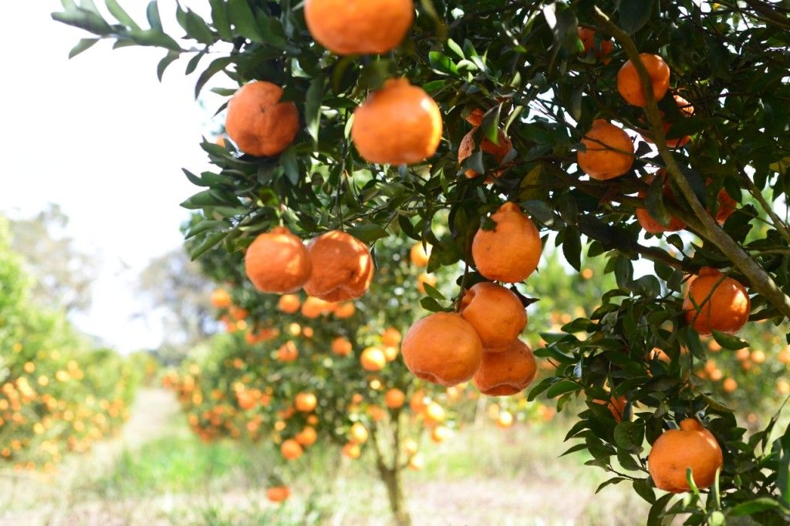

Olá, somos a Vitalliz uma empresa no ramo da inovação em tecnologias agricolas!
Apresentação
A equipe Vitalliz faz referência ao ciclo da vida, buscando alinhas o compromisso e cuidado que temos com a natureza e refletir esses príncipios em nossas tecnologias, visando melhorar o cotidiano das fazendas e dos produtores rurais.
Integrantes
Amanda Vithória
Lucas Gomes
Luiz Ricardo
Valéria de Freitas
Projeto

O nosso principal projeto é voltado para a produção de citros e busca tornar a vida do produtor rural mais fácil!
Criamos uma aplicação capaz de análisar uma folha de tangerina e retornar em tempo real um diagnóstico que identifica a falta de manganês ou cobre.
Sobre nós
Utilizamos inteligência artificial em nossos projetos
A inteligência artificial é responsavel pela identificação de deficiências através de uma análise folhar profunda tornando os resultados mais precisos.
Nossos estudos são responsáveis por promover maior qualidade dos frutos, visto que atráves das análises os produtores podem aplicar o tratamento adequado ao caso
Utilizamos a análise foliar pois a folha tem relação direta com os nutrientes que são absorvidos pelo solo e reflete através das cores da folha.